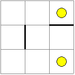
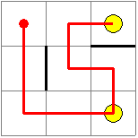

10. Backtracking na grafoch¶
Využijeme mierne upravenú triedu Graf z prednášky 8. Algoritmy prehľadávania grafu, v ktorom sme upravili:
graf je ohodnotený, t.j. pre každú hranu si uchovávame jej váhu (zvolili sme vzdialenosť vrcholov v rovine)
namiesto zoznamu množín susedností graf reprezentujeme ako zoznam vrcholov, v ktorom si každý vrchol pamätá susedov v asociatívnom poli (
dict) s hodnotami váha hrany
generovanie pozícií vrcholov: náhodne sme ich trochu poposúvali
pridali sme metódu
udalost_klik(), ktorá nielen zafarbuje kliknuté vrcholy, ale si ich aj pamätá v zoznameself.klik
import tkinter
import random
class Graf:
canvas = tkinter.Canvas(bg='white', width=620, height=620)
canvas.pack()
class Vrchol:
def __init__(self, x, y, meno):
self.sus = {}
self.xy, self.meno = (x, y), meno
def pridaj_hranu(self, v2, vaha):
self.sus[v2] = vaha
def kresli(self):
x, y = self.xy
self.id = self.canvas.create_oval(x-15, y-15, x+15, y+15, fill='gray', outline='')
self.canvas.create_text(x, y, fill='yellow', text=self.meno)
def zafarbi(self, farba):
self.canvas.itemconfig(self.id, fill=farba)
#-----------------------
def __init__(self, n):
self.Vrchol.canvas = self.canvas
self.vrcholy = []
d = (min(600, 600)-60) // (n-1)
for i in range(n):
for j in range(n):
x1, y1 = d*j+random.randrange(20, 60), d*i+random.randrange(20, 60)
v1 = self.pridaj_vrchol(x1, y1)
if j > 0 and random.randrange(3):
x2, y2 = self.vrcholy[v2 := v1-1].xy
vaha = round(((x1-x2)**2+(y1-y2)**2)**.5)
self.pridaj_hranu(v1, v2, vaha)
if i > 0 and random.randrange(3):
x2, y2 = self.vrcholy[v2 := v1-n].xy
vaha = round(((x1-x2)**2+(y1-y2)**2)**.5)
self.pridaj_hranu(v1, v2, vaha)
self.id = {}
for i in range(len(self.vrcholy)):
for j in self.vrcholy[i].sus:
if i < j:
self.kresli_hranu(i, j)
for vrchol in self.vrcholy:
vrchol.kresli()
self.canvas.bind('<Button-1>', self.udalost_klik)
self.klik = []
def pridaj_vrchol(self, x, y):
meno = len(self.vrcholy)
self.vrcholy.append(self.Vrchol(x, y, meno))
return meno
def pridaj_hranu(self, i, j, vaha):
self.vrcholy[i].pridaj_hranu(j, vaha)
self.vrcholy[j].pridaj_hranu(i, vaha)
def je_hrana(self, i, j):
return j in self.vrcholy[i].sus
def kresli_hranu(self, i, j):
(x1, y1), (x2, y2) = self.vrcholy[i].xy, self.vrcholy[j].xy
self.id[i, j] = self.id[j, i] = \
self.canvas.create_line(x1, y1, x2, y2, fill='lightgray', width=5)
def zafarbi_hranu(self, i, j, farba='lightgray'):
self.canvas.itemconfig(self.id[i, j], fill=farba)
def udalost_klik(self, event):
for vrchol in self.vrcholy:
x, y = vrchol.xy
if (x-event.x)**2 + (y-event.y)**2 < 15**2:
vrchol.zafarbi('blue')
self.klik.append(vrchol.meno)
return
graf = Graf(7)
print(*((v.meno, v.sus) for v in graf.vrcholy), sep='\n')
Základná schéma backtrackingu
Pripomeňme si, na čo vieme použiť prehľadávanie do hĺbky a do šírky:
algoritmus do hĺbky využijeme hlavne na zistenie príslušnosti vrcholov do komponentov
algoritmus do šírky slúži na nájdenie vzdialenosti (najkratšej cesty) dvoch vrcholov
takáto dĺžka cesty neberie do úvahy váhu na hranách, ale len počet vrcholov na ceste
Prehľadávanie s návratom
pracuje na princípe prechádzania (generovania) všetkých možných ciest v grafe, ktoré vychádzajú z nejakého vrcholu
pri tomto generovaní, môžeme zisťovať rôzne parametre týchto vygenerovaných ciest, napríklad súčet váh na hranách cesty, alebo, či cesta prešla cez nejaký konkrétny vrchol a pod.
uvedomte si, že takéto prehľadávanie (spomínali sme to ako hrubá sila, brute force) bude pre väčšie grafy časovo veľmi náročné, keďže vygenerovaných ciest môže byť obrovské množstvo
často závisí od detailov v nejakom teste, ako rýchlo takéto prehľadávanie nájde riešenie (hovoríme tomu, že využijeme nejakú heuristiku)
vo vyšších ročníkoch sa zoznámite s algoritmami, ktoré vedia riešiť niektoré z našich úloh aj bez hrubej sily
Základnú schému backtrackingu, môžeme pre graf upraviť, napríklad takto:
class Graf:
...
def start(self, v1, v2):
self.visited = set()
self.pocet = 0
self.backtracking(v1, v2)
def backtracking(self, v1, v2):
self.visited.add(v1)
if v1 == v2:
... # spracuj riešenie
self.pocet += 1
else:
for v in self.vrcholy[v1].sus:
if v not in self.visited:
# vizualizuj prechádzanú hranu
self.backtracking(v, v2)
# zruš vizualizovanie prechádzanej hrany
self.visited.remove(v1)
podobne ako pri prechádzaní grafu do hĺbky, aj tu musíme mať nejakú štruktúru
visited, aby sme neprechádzali cez nejaký vrchol viackrátparameter
v1označuje práve prechádzaný vrchol,v2cieľový vrchol, do ktorého sa snažíme dostaťtento algoritmus naozaj nájde všetky možné cesty z vrcholu
v1dov2, pričom pri spracovaní riešenia môžeme tieto nájdené cesty nejako pretriediť a vybrať si len tú najvhodnejšiu
Môžeme to otestovať:
graf = Graf(7)
graf.start(0, 48)
print(graf.pocet)
ale dozvieme sa len počet nájdených riešení (počet možných ciest z vrcholu 0 do vrcholu 48).
Vytvorme takýto program:
backtracking sa automaticky naštartuje po kliknutí na dva (rôzne) vrcholy
samotný algoritmus bude každú prechádzanú hranu prefarbovať a na malú chvíľu pritom spomalí výpočet
konkrétne nasledovný program bude počítať počet rôznych ciest a tento počet na záver vypíše
Upravíme aj metódu udalost_klik():
class Graf:
...
def udalost_klik(self, event):
for vrchol in self.vrcholy:
x, y = vrchol.xy
if (x-event.x)**2 + (y-event.y)**2 < 15**2:
vrchol.zafarbi('blue')
self.klik.append(vrchol.meno)
if len(self.klik) == 2: # <=== po druhom kliknutí
self.start(*self.klik)
return
def start(self, v1, v2):
self.visited = set()
self.pocet = 0
self.backtracking(v1, v2)
# keď skončí backtracking
print(f'{self.pocet = }')
def backtracking(self, v1, v2):
if v1 == v2:
self.pocet += 1 # spracuj riešenie
print('nasiel som cestu', self.pocet)
else:
self.visited.add(v1)
for v in self.vrcholy[v1].sus:
if v not in self.visited:
# vizualizuj prechádzanú hranu
self.zafarbi_hranu(v1, v, 'red')
self.canvas.update()
self.canvas.after(100)
self.backtracking(v, v2)
# zruš vizualizovanie prechádzanej hrany
self.zafarbi_hranu(v1, v)
self.visited.remove(v1)
graf = Graf(7)
volanie
self.canvas.after(100)označuje, že tu program zastane na 100 ms, tento riadok môžeme vyhodiť, aby bolo hľadanie ciest rýchlejšie
V niektorých situáciách sa nám môže hodiť, keď po nájdení prvého riešenia, zastavíme beh backtrackingu ale tak, aby táto cesta ostala nakreslená:
class Graf:
...
def backtracking(self, v1, v2):
if self.pocet > 0: # aby sa ďalej nevnáral do rekurzie
return
if v1 == v2:
self.pocet += 1 # spracuj riešenie
print('nasiel som cestu')
else:
self.visited.add(v1)
for v in self.vrcholy[v1].sus:
if v not in self.visited:
# vizualizuj prechádzanú hranu
self.zafarbi_hranu(v1, v, 'red')
self.canvas.update()
self.canvas.after(100)
self.backtracking(v, v2)
if self.pocet > 0: # aby sa nezrušilo zafarbenie hrán
return
# zruš vizualizovanie prechádzanej hrany
self.zafarbi_hranu(v1, v)
self.visited.remove(v1)
Častejšie ale budeme prechádzať všetky vygenerované cesty a hľadať medzi nimi jednu s nejakou vlastnosťou, napríklad cestu s najmenším ohodnotením: ak je na hranách, napríklad cena, tak hľadáme najlacnejšiu cestu. Zrejme je rozdiel medzi najkratšou cestou (s najmenej prechádzanými vrcholmi) a najlacnejšou cestou.
Hodnota cesty¶
Pri generovaní cesty budeme evidovať aj jej hodnotu (ako súčet ohodnotení hrán). Najprv to ukážeme pomocou atribútu hodnota v triede Graf, ktorý sa pri prechode hranou zvyšuje a pri návrate znižuje:
class Graf:
...
def start(self, v1, v2):
self.visited = set()
self.pocet = 0
self.hodnota = 0 # hodnota celej cesty
self.backtracking(v1, v2)
print(f'{self.pocet = }')
def backtracking(self, v1, v2):
if v1 == v2:
self.pocet += 1
print('cesta s hodnotou', self.hodnota)
else:
self.visited.add(v1)
for v, h in self.vrcholy[v1].sus.items():
if v not in self.visited:
self.hodnota += h
self.zafarbi_hranu(v1, v, 'red')
self.canvas.update()
#self.canvas.after(100)
self.backtracking(v, v2)
self.hodnota -= h
self.zafarbi_hranu(v1, v)
self.visited.remove(v1)
Hodnotu cesty môžeme vytvárať aj v parametri funkcie backtracking(). Na začiatku je hodnota cesty 0, vždy keď algoritmus prejde po nejakej hrane, tak sa táto hodnota zvýši. Keď cesta dorazí do cieľa (do vrcholu v2), zistí sa, či táto nová vygenerovaná cesta je lepšia (napríklad menšia ako doterajšie minimum, alebo väčšia ako doterajšie maximum) ako doteraz uchovávané hodnoty v premenných self.min a self.max. Všimnite si, že takto uchovávanú hodnotu v parametri nemusíme pri návrate z rekurzie znižovať, ako sme to robili v predchádzajúcej verzii:
class Graf:
...
def start(self, v1, v2):
self.visited = set()
self.pocet = 0
self.min = self.max = None
self.backtracking(v1, v2, 0)
print(f'{self.pocet = }')
print(f'{self.min = }')
print(f'{self.max = }')
def backtracking(self, v1, v2, hodnota):
if v1 == v2:
self.pocet += 1
if self.min is None or self.min > hodnota:
self.min = hodnota
if self.max is None or self.max < hodnota:
self.max = hodnota
else:
self.visited.add(v1)
for v, h in self.vrcholy[v1].sus.items():
if v not in self.visited:
self.zafarbi_hranu(v1, v, 'red')
self.canvas.update()
#self.canvas.after(100)
self.backtracking(v, v2, hodnota + h)
self.zafarbi_hranu(v1, v)
self.visited.remove(v1)
Zapamätanie celej cesty¶
Doterajšie verzie algoritmu generovali všetky cesty, ale si ich nikde neuchovávali. Využijeme pomocný zoznam (premenná self.cesta), do ktorého budeme ukladať momentálnu cestu. Tiež si ju uložíme do premennej self.najcesta, keď vyhovuje nejakej podmienke. Po skončení algoritmu backtracking túto cestu vypíšeme:
class Graf:
...
def start(self, v1, v2):
self.visited = set()
self.pocet = 0
self.min = self.max = None
self.cesta, self.najcesta = [], []
self.backtracking(v1, v2, 0)
print(f'{self.pocet = }')
print(f'{self.min = }')
print(f'{self.max = }')
print(f'{self.najcesta = }')
def backtracking(self, v1, v2, hodnota):
self.cesta.append(v1)
if v1 == v2:
self.pocet += 1
if self.min is None or self.min > hodnota:
self.min = hodnota
self.najcesta = self.cesta[:] # zapamätáme kópiu cesty
if self.max is None or self.max < hodnota:
self.max = hodnota
else:
self.visited.add(v1)
for v, h in self.vrcholy[v1].sus.items():
if v not in self.visited:
#self.zafarbi_hranu(v1, v, 'red')
#self.canvas.update()
#self.canvas.after(100)
self.backtracking(v, v2, hodnota + h)
#self.zafarbi_hranu(v1, v)
self.visited.remove(v1)
self.cesta.pop()
pri uchovávaní si najlepšej cesty musíme urobiť kópiu z premennej
self.cesta, lebo nestačí urobiť len obyčajné priradenie, ktoré by priradilo len referenciu na premennúaby sme algoritmus urýchlili, odstránili sme aj vykresľovanie hrán
Tento algoritmus nájde najlepšiu cestu, ale ju nevykreslí, len vypíše čísla vrcholov. Ďalšia verzia programu vykresľuje najlepšiu cestu - teraz hľadáme cestu nie s najmenšou hodnotou, ale s najväčšou:
class Graf:
...
def start(self, v1, v2):
self.visited = set()
self.min = self.max = None
self.cesta, self.najcesta = [], []
self.backtracking(v1, v2, 0)
print(f'{self.min = }')
print(f'{self.max = }')
for i in range(len(self.najcesta)-1):
self.zafarbi_hranu(self.najcesta[i], self.najcesta[i+1], 'blue')
def backtracking(self, v1, v2, hodnota):
self.cesta.append(v1)
if v1 == v2:
if self.min is None or self.min > hodnota:
self.min = hodnota
if self.max is None or self.max < hodnota:
self.max = hodnota
self.najcesta = self.cesta[:]
else:
self.visited.add(v1)
for v, h in self.vrcholy[v1].sus.items():
if v not in self.visited:
self.backtracking(v, v2, hodnota + h)
self.visited.remove(v1)
self.cesta.pop()
možno vám napadlo, že keď si pamätáme cestu, nepotrebujeme udržiavať množinu
self.visited, veďself.cestaobsahuje tie isté vrcholy - je to pravda, len hľadanie vrcholu v množine (typset) je pre veľa prvkov rýchlejšie ako v zozname (typlist) a takýto program sa môže pre niekoho zdať menej čitateľnýpodobne ako sme namiesto atribútu
self.hodnotapridali nový parameterhodnotado metódybacktracking(), môžeme pridať aj parametercesta, v ktorom sa vytvára momentálna postupnosť prechádzaných vrcholov
Hľadanie najkratšej cesty môžeme teraz zapísať:
class Graf:
...
def start(self, v1, v2):
self.naj = None
self.najcesta = []
self.backtracking(v1, v2, 0, [v1]) # vo vytváranej ceste je už prvý vrchol
print(f'{self.naj = }')
for i in range(len(self.najcesta)-1):
self.zafarbi_hranu(self.najcesta[i], self.najcesta[i+1], 'blue')
def backtracking(self, v1, v2, hodnota, cesta):
if v1 == v2:
if self.naj is None or self.naj > hodnota:
self.naj = hodnota
self.najcesta = cesta
else:
for v, h in self.vrcholy[v1].sus.items():
if v not in cesta: # kontrolujeme cestu namiesto visited
self.backtracking(v, v2, hodnota + h, cesta + [v])
Hľadanie cyklov v grafe¶
Backtracking môžeme využiť aj na generovanie všetkých cyklov, t.j. takých ciest, v ktorých je posledný vrchol ten istý ako prvý. Využijeme poslednú verziu backtrackingu, v ktorej sme pridali parameter cesta. Pritom zmien v programe pre hľadanie cyklu (hľadáme cyklus s maximálnou hodnotou) je veľmi málo:
class Graf:
...
def udalost_klik(self, event):
for vrchol in self.vrcholy:
x, y = vrchol.xy
if (x-event.x)**2 + (y-event.y)**2 < 15**2:
vrchol.zafarbi('blue')
self.start(vrchol.meno)
return
def start(self, v1): # metóda má iba jeden parameter
self.naj = None
self.najcesta = []
self.backtracking(v1, v1, 0, []) # backtracking štartujeme s prázdnou cestou
print(f'{self.naj = }')
for i in range(len(self.najcesta)-1):
self.zafarbi_hranu(self.najcesta[i], self.najcesta[i+1], 'blue')
def backtracking(self, v1, v2, hodnota, cesta):
if cesta != [] and v1 == v2:
if len(cesta) > 2 and (self.naj is None or self.naj < hodnota): # hľadáhame maximum
self.naj = hodnota
self.najcesta = [v1] + cesta # k nájdenému riešeniu pridáme na začiatok štartový vrchol
else:
for v, h in self.vrcholy[v1].sus.items():
if v not in cesta:
self.backtracking(v, v2, hodnota + h, cesta + [v])
Zmenili sme:
zjednodušili sme metódu
udalost_klik(), lebo nepotrebujeme ukladať viac kliknutých vrcholov a metódustart()voláme len s jedným parametrom: začiatkom cyklu, čo je zároveň aj koncom cykluv metóde
start()sme zmenili naštartovanie backtrackingu: posielame ako začiatok aj koniec cesty ten istý vrchol a tiež prvý vrchol nevkladáme do vytváranej cesty (parametercesta), aby sme ho tam mohli vložiť aj druhýkrátúvodný test v metóde
backtracking()kontroluje nielen to, či sme už v cieli (tedav1 == v2), ale aj dĺžku vytvoreného cyklu, ktorá by mala mať aspoň 2 rôzne hrany, t.j. aspoň 3 vrcholyv metóde
backtracking(), keď nájdeme nejaké vyhovujúce riešenie, ktoré je lepšie ako doteraz nájdené najlepšie (v atribúteself.najcesta), pridáme k nemu na začiatok štartový vrchol, lebo ten sme úmyselne do cesty nezaradili
Malým zjednodušením tohto riešenie vieme hľadať najdlhší (alebo aj najkratší) cyklus na počet prejdených vrcholov a to bez ohľadu na hodnoty na hranách:
class Graf:
...
def start(self, v1):
self.najcesta = []
self.backtracking(v1, v1, [])
if self.najcesta == []:
print('nenasiel ziadnu cestu')
for i in range(len(self.najcesta)-1):
self.zafarbi_hranu(self.najcesta[i], self.najcesta[i+1], 'blue')
def backtracking(self, v1, v2, cesta):
if cesta != [] and v1 == v2:
if len(cesta) > 2 and len(self.najcesta) < len(cesta):
self.najcesta = [v1] + cesta
else:
for v in self.vrcholy[v1].sus:
if v not in cesta:
self.backtracking(v, v2, cesta + [v])
V prípade, že takýto cyklus prejde cez všetky vrcholy, hovoríme mu Hamiltonovská kružnica (v skutočnosti je Hamiltonovská kružnica podgrafom, ktorý obsahuje všetky vrcholy grafu a len hrany, ktoré sú z tohto cyklu).
Cvičenie¶
Poznámka
riešenia úloh ulož do jedného súboru a odovzdaj na úlohový server https://vektor.fmph.uniba.sk/
testovací server tieto ulohy nebude testovať, vyrieš a odovzdaj ich všetky
prvé tri riadky súboru s riešením musia obsahovať:
# 10. cvicenie # student: Janko Hrasko # datum: 28.4.2026
zrejme ako študenta uvedieš svoje meno
študent piateho ročníka Samuel Ješík, ktorý finišuje svoju diplomovú prácu, vás prosí, vyplniť dotazník k používaniu umelej inteligencie pri učení sa programovania: dotaznik.html
dotazník je anonymný, vyplňte ho čo najúprimnejšie
Do triedy
Grafz prednášky aj s backtrackingom dopíš generovanie náhodných hodnôt na hranách grafu z intervalu<1, 4>, túto hodnotu vypíš do stredu príslušnej hrany. Uprav tieto metódy:class Graf: ... def __init__(self, n): ... def kresli_hranu(self, i, j): ...
Otestuj, ako teraz funguje hľadanie najkratšej cesty (cesty s najmenším súčtom hodnôt na hranách).
Do náhodného generovania hrán grafu v inicializácii
__init__()pridaj generovanie aj šikmých hrán. S nejakou pravdepodobnosťou spojí momentálny vrcholv1s vrcholom, ktorý je o riadok aj o stĺpec o 1 menší (zrejme to nerobí v prvom riadku ani stĺpci):class Graf: ... def __init__(self, n): ...
Otestuj, ako teraz funguje hľadanie najkratšej cesty.
Uprav backtracking tak, aby hľadal a vyznačil maximálne dlhú cestu (na počet prejdených vrcholov), ale ak je takých viac vyberie tú z nich, ktorá má minimálny súčet váh. Uprav metódu:
class Graf: ... def backtracking(self, v1, v2, hodnota, cesta): ...
Zmeň metódu
backtracking()tak, aby po druhom kliknutí na nejaký vrchol (v2) našla najkratší (resp. najdlhší) cyklus, ktorý začína (a teda aj končí) vo vrcholev1a prechádza cez druhý kliknutý vrcholv2. Uprav metódy:class Graf: ... def start(self, v1, v2): ... self.backtracking(v1, v1, v2, 0, []) ... def backtracking(self, v1, v2, v3, hodnota, cesta): # v3 je vrchol, cez ktorý prechádza cyklus ...
Backtracking generuje všetky cykly z
v1(dov2) a pre každý ešte skontroluje, či prechádza cezv3.
Napíš metódu
zisti5(), ktorá pomocou backtrackingu zistí, koľko existuje v danom grafe rôznych cyklov dĺžky presne 5 (zaujíma nás to, že počet vrcholov v ceste je 5 a nie aké sú váhy na hranách). Zrejme v pôvodnom grafe, v ktorom boli hrany náhodne generované len vodorovne a zvislo, nemôže existovať žiaden cyklus dĺžky 5. Metóda na záver vypíše tento zistený počet:class Graf: ... def zisti5(self): ... graf = Graf(7) graf.zisti5()
Zrejme cykly
(1, 2, 3, 4, 5, 1)a(4, 3, 2, 1, 5, 4)nie sú rôzne.
Pre danú konštantu
Da kliknutím na jeden vrchol zafarbi (napríklad žltou farbou) všetky také vrcholy, pre ktoré existuje cesta štartujúca zo zadaného (kliknutého) vrcholu a jej hodnota (súčet váh na hranách) je presneD. Uprav metódy:D = 10 class Graf: ... def udalost_klik(self, event): ... def start(self, v1): ... def backtracking(self, ...): ... self.vrcholy[v1].zafarbi('yellow') self.canvas.update() ...
Zmeň metódu
backtracking()tak, aby hľadaná najdlhšia cesta mohla prechádzať cez tie isté vrcholy aj viackrát, len treba strážiť, aby nešla viackrát po tej istej hrane. Uprav metódy:class Graf: ... def start(self, v1, v2): ... def backtracking(self, v1, v2, ...): ...
Ohodnotený neorientovaný graf je definovaný v textovom súbore tak, že v každom riadku je popísaná jedna hrana pomocou dvoch čísel vrcholov a váhy (reťazec), napríklad:
1 2 a 1 4 ma 1 5 a 3 4 m 4 2 am 6 4 a 5 6 u 5 3 am 4 5 em Zisti, koľko existuje rôznych ciest (cez vrcholy aj hrany môžeme prechádzať ľubovoľný počet krát), ktorých hodnota je reťazec ``'mamamaemuaemamamamu'``. Úlohu rieš prečítaním grafu zo súboru a potom pomocou backtrackingu. Program by mal vypísať všetky cesty ako postupnosti navštívených vrcholov:: class Graf: def __init__(self, meno_suboru): ... def start(self, retazec): ... def backtracking(self, ...): ... graf = Graf('subor.txt') graf.start('mamamaemuaemamamamu')
10. Týždenný projekt¶
Poznámka
riešenie úlohy ulož do textového súboru s príponou
.pya odovzdaj na testovací server https://vektor.fmph.uniba.sk/prvé tri riadky súboru s riešením musia obsahovať:
# 10. tyzdenny projekt # student: Janko Hraško # datum: 11.5.2026
zrejme ako študenta uvedieš svoje meno, dátum uprav podľa dátumu odovzdania
nepoužívaj
import,global,sortanisortedv module sa môže nachádzať len jedna definícia triedy
Labyrinths vnorenou triedouVertex, do triedyLabyrinthmôžeš pridávať vlastné atribúty a metódybude sa kontrolovať štruktúra vytvoreného grafu (atribút
graph) s rôznymi textovými súbormi
Zadanie skúšky z minulých rokov: labyrint
Labyrint je štvorcová sieť veľkosti m x n, pre ktorú sa dozvieme, medzi ktorými políčkami siete sú steny, teda sa tadiaľ nebude dať prechádzať. Na niektorých políčkach sa nachádzajú odmeny (napríklad mince). Úlohou je nájsť najkratšiu cestu zo štartového políčka, ktorá pozbiera všetky odmeny. Treba dať pozor, aby sa na žiadne políčko nestúpilo dvakrát.
Labyrint reprezentuj ako graf, v ktorom sú políčka labyrintu vrcholy grafu a hrany sú priechody medzi políčkami. Uvedom si, že každý vrchol môže mať maximálne štyroch susedov (nemusí mať žiadneho).
Labyrint je popísaný v textovom súbore, ktorý má tento tvar:
prvý riadok obsahuje dve čísla: počet riadkov a počet stĺpcov labyrintu
ďalej nasledujú riadky so stenami a odmenami (v ľubovoľnom poradí)
ak riadok obsahuje iba 2 čísla, označuje to políčko s odmenou (riadok, stĺpec), riadky aj stĺpce číslujeme od
0inak riadok obsahuje postupnosť aspoň dvoch políčok (riadok1, stĺpec1, riadok2, stĺpec2, …) - touto postupnosťou definuje nejaké steny v labyrinte: stena je medzi prvým a druhým políčkom, aj druhým a tretím, … atď.
Zadefinuj triedu Labyrinth:
class Labyrinth:
class Vertex:
def __init__(self, row, column): # riadok, stĺpec
self.adjacent = [] # zoznam susedov, susedia sú typu Vertex
self.row, self.column = row, column
self.reward = False # odmena
def __repr__(self):
return f'<{self.row},{self.column}>'
def __init__(self, file_name):
self.graph = {} # slovník vrcholov grafu – obsahuje objekty typu Vertex
...
def get_vertex(self, row, column):
...
def change_rewards(self, *seq):
...
def start(self, row, column):
...
kde
vnorená definícia triedy
Vertexmá už zadefinované nejaké metódy aj atribúty – tieto atribúty využi pre reprezentáciu grafu; atribútadjacentbude obyčajný zoznam (typulist), ktorý bude obsahovať zoznam susediacich vrcholov, teda prvkami tohto zoznamu budú opäť objekty typuVertex(v ľubovoľnom poradí)metóda
__init__(file_name)prečíta súbor a vytvorí z neho graf v atribúte
graph:bude obsahovať všetky vrcholy grafu, teda objekty typu
Vertexbude to asociatívne pole (
dict), v ktorom kľúčom je poloha políčka (riadok, stĺpec) a príslušnou hodnotou je samotný vrchol
metóda
get_vertex(row, column)vráti referenciu (typ
Vertex) na príslušný vrchol grafu, ktorý reprezentuje zadané políčko
metóda
change_rewards(*seq)parameter
seqje postupnosť dvojíc (riadok, stĺpec)metóda zmení na všetkých zadaných políčkach to, či sa na nich nachádza odmena: ak na políčku bola odmena, odstráni ju, inak na políčko umiestni odmenu
metóda
start(row, column)pomocou backtrackingu hľadá správnu cestu (najkratšia cesta, ktorá prejde cez všetky políčka s odmenami)
metóda vráti generátor navštívených políčok - teda dvojíc (
tuple) celých čísel (zrejme prvé políčko v tejto postupnosti bude zadaný(row, column))ak správna cesta existuje, musí končiť na políčku s odmenou
ak cesta, ktorá prejde cez všetky políčka s odmenou sa skonštruovať nedá, generátor nevráti nič
testovač môže zavolať túto metódu viac krát s rôznymi štartovými políčkami
ak existuje viac najkratších ciest, metóda vráti ľubovoľnú z nich
Napríklad pre takéto zadanie labyrintu:

3 3
1 0 1 1
2 2
0 2
1 2 0 2
tento test:
if __name__ == '__main__':
lab = Labyrinth('subor1.txt')
v = lab.get_vertex(1, 0)
print('vrchol:', v, 'susedia:', v.adjacent, 'odmena:', v.reward)
v = lab.get_vertex(0, 2)
print('vrchol:', v, 'susedia:', v.adjacent, 'odmena:', v.reward)
print(*lab.start(0, 0))
print(*lab.start(2, 1))
lab.change_rewards((2, 2))
print(*lab.start(0, 1))
vypíše:
vrchol: <1,0> susedia: [<0,0>, <2,0>] odmena: False
vrchol: <0,2> susedia: [<0,1>] odmena: True
(0, 0) (1, 0) (2, 0) (2, 1) (2, 2) (1, 2) (1, 1) (0, 1) (0, 2)
(2, 1) (2, 2) (1, 2) (1, 1) (0, 1) (0, 2)
(0, 1) (0, 2)
Prvé z riešení nájde túto trasu:

Môžeš si stiahnuť 2tp10.zip s testovacími súbormi 'subor1.txt', 'subor2.txt', 'subor3.txt', …, ktoré bude používať testovač.